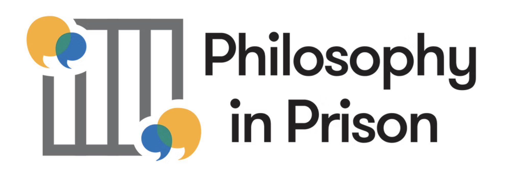
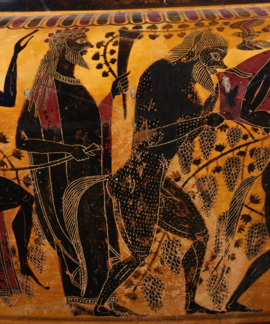

Beyond the academy

For three years I have taught philosophy inside UK prisons as a volunteer with the charity Philosophy in Prison. In short, we bring philosophy to incarcerated people. These sessions reinvigorate the role of conversation which sits at the heart of philosophy, without sacrificing philosophical rigour.

The Philosophy Bar is a public-facing philosophy of art project that takes philosophical conversation into art exhibition spaces. Visitors are invited to engage in guided philosophical dialogue on the theme of love. The project is built on the conviction that galleries are natural homes for the kind of open, wondering inquiry that philosophy demands.